<<<<<<< HEAD
<<<<<<< HEAD
Exerc<img
src="ec-lmr12-19.png" alt="i" class="12x-x-19" />cios finais
<<<<<<< HEAD
<<<<<<< HEAD
<<<<<<< HEAD
<<<<<<< HEAD
=======
>>>>>>> 62bea6a0d0a1d3eca740d93a452697554da972de
=======
>>>>>>> 8ffe51d4bbc8f1e500cc9c435f05cb1c6f0ffef3
=======
>>>>>>> 2f43bff4df7198ad5fd8ebe602c2f00c0d1ecf01
=======
>>>>>>> a89bb6fd5bd3faff679a502c98ff65257591aa83
E 9.9.1.Considere o seguinte modelo para o crescimento de uma colônia de
bactérias:
cuja solução exata é dada por .
=======
src="main4383x.png" alt="y(t) = e- αt " class="math" >.
>>>>>>> 62bea6a0d0a1d3eca740d93a452697554da972de
Considere agora o método de Euler aplicado a este problema com passa
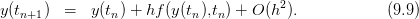:
onde indica a densidade de bactérias em unidades arbitrárias na colônia e
e são constantes positivas. Pergunta-se:
Qual a solução quando a condição inicial é igual a ou ?
O que acontece quando a condição inicial é um número entre
e ?
O que acontece quando a condição inicial é um número negativo?
O que acontece quando a condição inicial é um número positivo
maior que A?
Se e e , use métodos numéricos para obter
tempo necessário para que a população dobre?
Se e e , use métodos numéricos para obter
tempo necessário para que a população dobre?
Resposta.Os valores exatos para os itens e e f são:e
E 9.9.2.Considere o seguinte modelo para a evolução da velocidade de um
objeto em queda (unidades no SI):
Sabendo que e e . Pede-se a velocidade ao
tocar o solo, sabendo que a altura inicial era 100.
Resposta.O valor exato éem
E 9.9.3.Considere o seguinte modelo para o oscilador não-linear de Van der
Pol:
onde , e são constantes positivas.
Encontre a frequência e a amplitude de oscilações quando ,
e . (Teste diversas condições iniciais)
Estude a dependência da frequência e da amplitude com os parâmetros
, e . (Teste diversas condições iniciais)
Que diferenças existem entre esse oscilador não-linear e o oscilador
linear?
E 9.9.4.Considere o seguinte modelo para um oscilador não-linear:
e,
portanto,
Fixamos um , de forma que . Mas observamos que
somente quando e solução positivas somente quando
.
=======
src="main4387x.png" alt="˜y(t) = y(k+1) = (1 - αh )t∕h
=======
src="main4478x.png" alt=" ′′ ′ 2
y (t) − α (A − z(t))y(t) + w0y(t) = 0
Cz′(t) + z(t) = y(t)2
=======
src="main4483x.png" alt=" ′′ ′ 2
y (t) - α (A - z(t))y(t) + w0y(t) = 0
Cz′(t) + z(t) = y(t)2
>>>>>>> 2f43bff4df7198ad5fd8ebe602c2f00c0d1ecf01
=======
src="main4483x.png" alt=" ′′ ′ 2
y (t) − α (A − z(t))y(t) + w0y(t) = 0
Cz′(t) + z(t) = y(t)2
>>>>>>> a89bb6fd5bd3faff679a502c98ff65257591aa83
" class="math-display" >
onde , , e são constantes positivas.
Encontre a frequência e a amplitude de oscilações quando ,
, e . (Teste diversas condições iniciais)
Estude a dependência da frequência e da amplitude com os parâmetros
, , e . (Teste diversas condições iniciais)
E 9.9.5.Considere o seguinte modelo para o controle de temperatura em um
processo químico:
onde , e são constantes positivas e indica o potência do
aquecedor. Sabendo que é a temperatura desejada, interprete o
funcionamento esse sistema de controle.
Calcule a solução quando a temperatura externa ,
, , e . Considere condições iniciais
nulas.
Quanto tempo demora o sistema para atingir a temperatura 900K?
Refaça os dois primeiros itens com e
Faça testes para verificar a influência de , e na temperatura
final.
E 9.9.6.Considere a equação do pêndulo dada por:
onde é o módulo da aceleração da gravidade e é o comprimento da
haste.
Mostre analiticamente que a energia total do sistema dada por
é mantida constante.
Resolva numericamente esta equação para e e
as seguintes condições iniciais:
e .
e .
e .
e .
e .
e .
Em todos os casos, verifique se o método numérico reproduz a lei de conservação de
energia e calcule período e amplitude.
E 9.9.7.Considere o modelo simplificado de FitzHugh-Nagumo para o potencial
elétrico sobre a membrana de um neurônio:
onde é a corrente de excitação.
Encontre o único estado estacionário com .
Resolva numericamente o sistema com condições iniciais dadas por
e
E 9.9.8.Considere o problema de valor inicial dado por
Conclusão: Se o passo 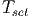 for muito grande, o método pode se tornar
instável, produzindo solução espúrias.
=======
src="main4535x.png" alt="du-(t) −t
dt = − u(t) + e
=======
src="main4540x.png" alt="du-(t) -t
dt = - u(t) + e
>>>>>>> 2f43bff4df7198ad5fd8ebe602c2f00c0d1ecf01
=======
src="main4540x.png" alt="du-(t) −t
dt = − u(t) + e
>>>>>>> a89bb6fd5bd3faff679a502c98ff65257591aa83
u(0) = 0
" class="math-display" >
Resolva analiticamente este problema usando as técnicas elementares de equações
diferenciais ordinárias. A seguir encontre aproximações numéricas usando os
métodos de Euler, Euler modificado, Runge-Kutta Clássico e Adams-Bashforth de
ordem 4 conforme pedido nos itens.
Construa uma tabela apresentando valores com 7 algarismos significativos
para comparar a solução analítica com as aproximações numéricas
produzidas pelos métodos sugeridos. Construa também uma tabela para o
erro absoluto obtido por cada método numérico em relação à solução
analítica. Nesta última tabela, expresse o erro com 2 algarismos
significativos em formato científico. Dica: para a segunda
tabela.
0.5
1.0
1.5
2.0
2.5
Analítico
Euler
Euler modificado
Runge-Kutta Clássico
Adams-Bashforth ordem 4
0.5
1.0
1.5
2.0
2.5
Euler
Euler modificado
Runge-Kutta Clássico
Adams-Bashforth ordem 4
Calcule o valor produzido por cada um desses método para com passo
, , 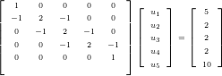, e 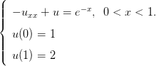. Complete a
tabela com os valores para o erro absoluto encontrado.
Retornemos ao problema de valor inicial (10.1) dado por:
O Método de Euler aplicado à solução desse problema consiste em aproximar
a derivada por um esquema de primeira ordem do tipo
Aqui é o passo do método, que consideraremos uma constante. Assim temos
(10.3) se transforma em:
Definimos, então, e como a aproximação para
produzida pelo Método de Euler. Assim, obtemos
O problema (10.5) consiste em um esquema iterativo, isto é, é a condição
inicial; pode ser obtido de ; , de e assim por diante,
calculamos o termo apartir do anterior .
Exemplo 10.1.1.Retornemos ao o problema de valor inicial do exemplo (10.2):
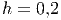
Cuja solução é 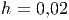. O método de Euler aplicado a este problema
produz o seguinte esquema:
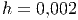
cuja solução é dada por
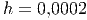
Como 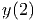, a solução aproximada pelo Método de Euler é
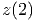
Observe que 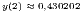, mas se é pequeno, a aproximação é boa,
pois
Vamos agora, analisar o desempenho do Método de Euler usando um exemplo
mais complicado, porém ainda simples suficiente para que possamos obter a
solução exata:
Exemplo 10.1.2. Considere o problema de valor inicial relacionado à equação
logística:
Podemos obter a solução exata desta equação usando o método de separação
de variáveis e o método das frações parciais. Para tal escrevemos:
O termo pode ser decomposto em frações parciais como e
chegamos na seguinte equação diferencial:
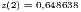
Integrando termo-a-termo, temos a seguinte equação algébrica relacionando 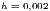
e :
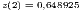
Onde é a constante de integração, que é definida pela condição inicial,
isto é, 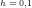 em 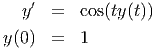. Substituindo, temos 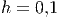. O que resulta
em:
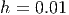
Equivalente a
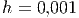
e
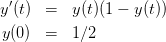
Colocando o termo 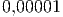 em evidência, encontramos:
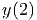
(10.7)
E, finalmente, encontramos a solução exata dada por .
Vejamos, agora, o esquema iterativo produzido pelo método de Euler:
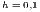
Para fins de comparação, calculamos a solução de 10.1.2 e de (??) para alguns
valores de e de passo 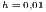 e resumimos na Tabela 10.1.
Tabela 10.1: Tabela comparativa enter Método de Euler e solução exata
para problema 10.1.2.
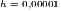
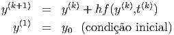
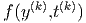
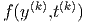
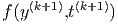
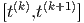
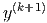
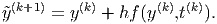
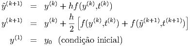
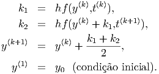
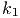
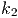
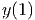
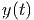
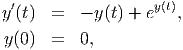
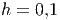
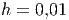
No exemplo a seguir, apresentamos um problema envolvendo uma equação
não-autônoma, isto é, quando a função 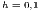 depende explicitamente do
tempo.
Exemplo 10.1.3.Resolva o problema de valor inicial
cuja solução exata é .
O esquema recursivo de Euler fica:
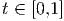
Comparação
No exemplo 10.1.4, mostramos como o Método de Euler pode ser
facilmente estendido para problemas envolvendo sistemas de equações
diferenciais..
Exemplo 10.1.4. Escreva o processo iterativo de Euler para resolver
numericamente o seguinte sistema de equações diferenciais
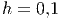
cuja solução exata é 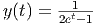 e .
Para aplicar o Método de Euler a um sistema, devemos encarar as diversas
incógnitas do sistema como formando um vetor, neste caso, escrevemos:
O
sistema é igualmente escrito na forma vetorial:
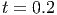
Observe que este processo iterativo é equivalente a:
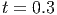
Exemplo 10.1.5.Escreva o problema de valor inicial de segunda ordem dado por
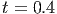
como um problema envolvendo um sistema de primeira ordem.
A fim de transformar a equação diferencial dada em um sistema de equações
de primeira ordem, introduzimos a substituição 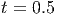, de forma que obteremos
o sistema:
Portanto, o Método de Euler produz o seguinte processo iterativo:

 .
=======
src="main4383x.png" alt="y(t) = e- αt " class="math" >.
>>>>>>> 62bea6a0d0a1d3eca740d93a452697554da972de
.
=======
src="main4383x.png" alt="y(t) = e- αt " class="math" >.
>>>>>>> 62bea6a0d0a1d3eca740d93a452697554da972de

 indica a densidade de bactérias em unidades arbitrárias na colônia e
indica a densidade de bactérias em unidades arbitrárias na colônia e  e
e  são constantes positivas. Pergunta-se:
são constantes positivas. Pergunta-se:
 é igual a
é igual a  ou
ou  ?
?
 é um número entre
é um número entre  e
e  ?
?
 é um número negativo?
é um número negativo?
 é um número positivo
maior que A?
é um número positivo
maior que A?
 e
e  e
e  , use métodos numéricos para obter
tempo necessário para que a população dobre?
, use métodos numéricos para obter
tempo necessário para que a população dobre?
 e
e  e
e  , use métodos numéricos para obter
tempo necessário para que a população dobre?
, use métodos numéricos para obter
tempo necessário para que a população dobre?


 e
e  e
e  . Pede-se a velocidade ao
tocar o solo, sabendo que a altura inicial era 100.
. Pede-se a velocidade ao
tocar o solo, sabendo que a altura inicial era 100.
![∘ -g[1− e−200α]
α](main4470x.png)


 ,
,  e
e  são constantes positivas.
são constantes positivas.
 ,
,
 e
e  . (Teste diversas condições iniciais)
. (Teste diversas condições iniciais)
 ,
,  e
e  . (Teste diversas condições iniciais)
. (Teste diversas condições iniciais)


 , de forma que
, de forma que  . Mas observamos que
. Mas observamos que
 somente quando
somente quando  e solução positivas somente quando
e solução positivas somente quando
 .
=======
src="main4387x.png" alt="˜y(t) = y(k+1) = (1 - αh )t∕h
=======
src="main4478x.png" alt=" ′′ ′ 2
y (t) − α (A − z(t))y(t) + w0y(t) = 0
Cz′(t) + z(t) = y(t)2
=======
src="main4483x.png" alt=" ′′ ′ 2
y (t) - α (A - z(t))y(t) + w0y(t) = 0
Cz′(t) + z(t) = y(t)2
>>>>>>> 2f43bff4df7198ad5fd8ebe602c2f00c0d1ecf01
=======
src="main4483x.png" alt=" ′′ ′ 2
y (t) − α (A − z(t))y(t) + w0y(t) = 0
Cz′(t) + z(t) = y(t)2
>>>>>>> a89bb6fd5bd3faff679a502c98ff65257591aa83
" class="math-display" >
.
=======
src="main4387x.png" alt="˜y(t) = y(k+1) = (1 - αh )t∕h
=======
src="main4478x.png" alt=" ′′ ′ 2
y (t) − α (A − z(t))y(t) + w0y(t) = 0
Cz′(t) + z(t) = y(t)2
=======
src="main4483x.png" alt=" ′′ ′ 2
y (t) - α (A - z(t))y(t) + w0y(t) = 0
Cz′(t) + z(t) = y(t)2
>>>>>>> 2f43bff4df7198ad5fd8ebe602c2f00c0d1ecf01
=======
src="main4483x.png" alt=" ′′ ′ 2
y (t) − α (A − z(t))y(t) + w0y(t) = 0
Cz′(t) + z(t) = y(t)2
>>>>>>> a89bb6fd5bd3faff679a502c98ff65257591aa83
" class="math-display" >
 ,
,  ,
,  e
e  são constantes positivas.
são constantes positivas.
 ,
,
 ,
,  e
e  . (Teste diversas condições iniciais)
. (Teste diversas condições iniciais)
 ,
,  ,
,  e
e  . (Teste diversas condições iniciais)
. (Teste diversas condições iniciais) ,
,  e
e  são constantes positivas e
são constantes positivas e  indica o potência do
aquecedor. Sabendo que
indica o potência do
aquecedor. Sabendo que  é a temperatura desejada, interprete o
funcionamento esse sistema de controle.
é a temperatura desejada, interprete o
funcionamento esse sistema de controle.
 ,
,
 ,
,  ,
,  e
e  . Considere condições iniciais
nulas.
. Considere condições iniciais
nulas.
 e
e 
 ,
,  e
e  na temperatura
final.
na temperatura
final.
 é o módulo da aceleração da gravidade e
é o módulo da aceleração da gravidade e  é o comprimento da
haste.
é o comprimento da
haste.

 e
e  e
as seguintes condições iniciais:
e
as seguintes condições iniciais:
 e
e  .
.
 e
e  .
.
 e
e  .
.
 e
e  .
.
 e
e  .
.
 e
e  .
.
 é a corrente de excitação.
é a corrente de excitação.
 com
com  .
.
 e
e


 para a segunda
tabela.
para a segunda
tabela.
 com passo
com passo
 ,
,  , 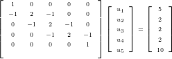,
, 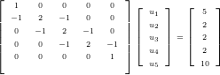,  e 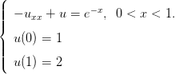. Complete a
tabela com os valores para o erro absoluto encontrado.
e 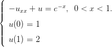. Complete a
tabela com os valores para o erro absoluto encontrado.


 por um esquema de primeira ordem do tipo
por um esquema de primeira ordem do tipo

 é o passo do método, que consideraremos uma constante. Assim temos
(10.3) se transforma em:
é o passo do método, que consideraremos uma constante. Assim temos
(10.3) se transforma em: 
 e
e  como a aproximação para
como a aproximação para  produzida pelo Método de Euler. Assim, obtemos
produzida pelo Método de Euler. Assim, obtemos 
 é a condição
inicial;
é a condição
inicial;  pode ser obtido de
pode ser obtido de  ;
;  , de
, de  e assim por diante,
calculamos o termo
e assim por diante,
calculamos o termo  apartir do anterior
apartir do anterior  .
.
 é pequeno, a aproximação é boa,
pois
é pequeno, a aproximação é boa,
pois
 e de passo 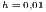 e resumimos na Tabela
e de passo 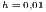 e resumimos na Tabela